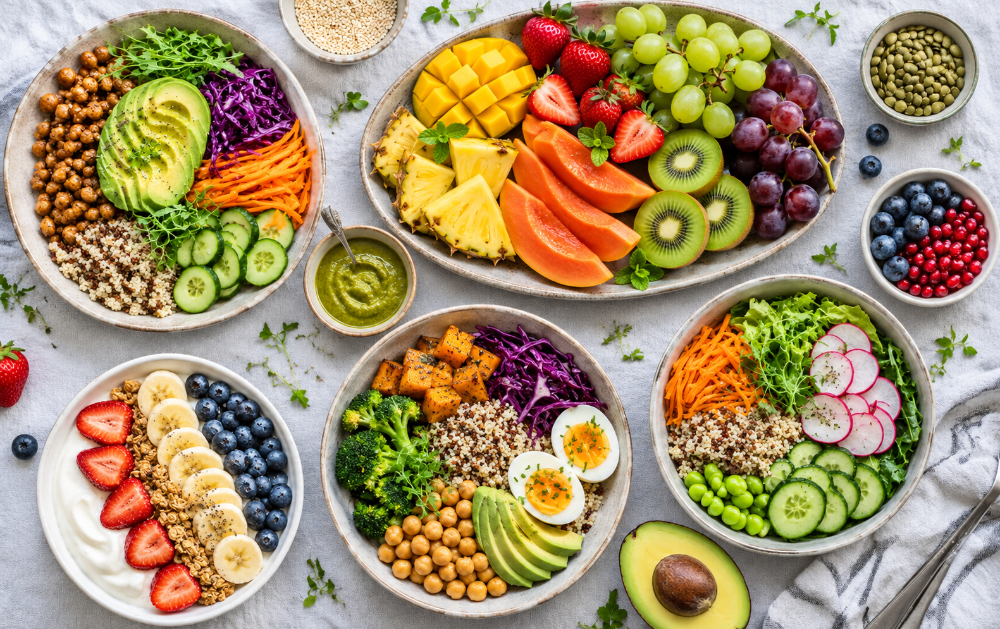
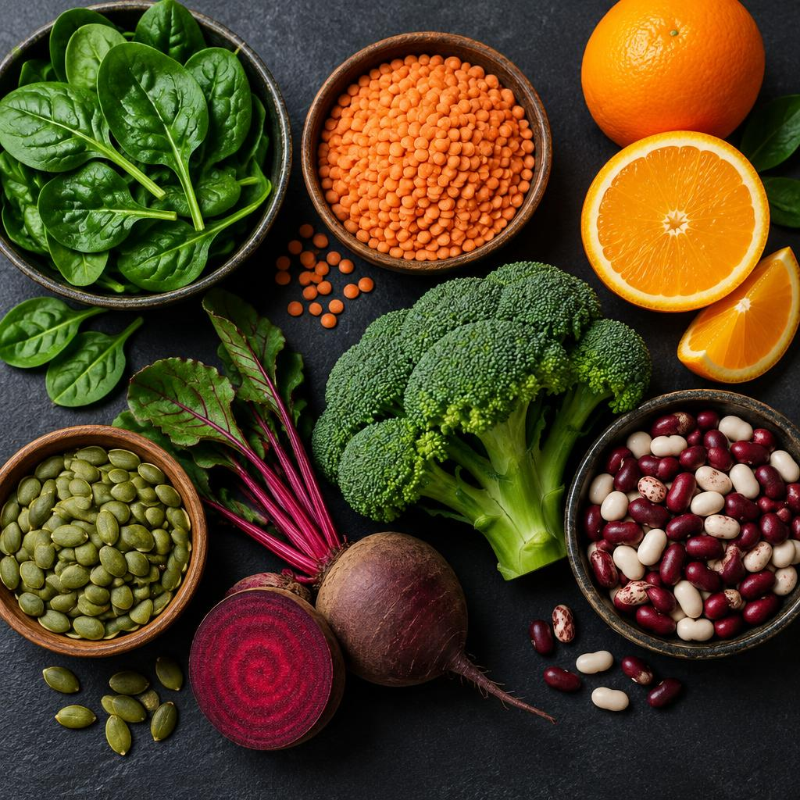
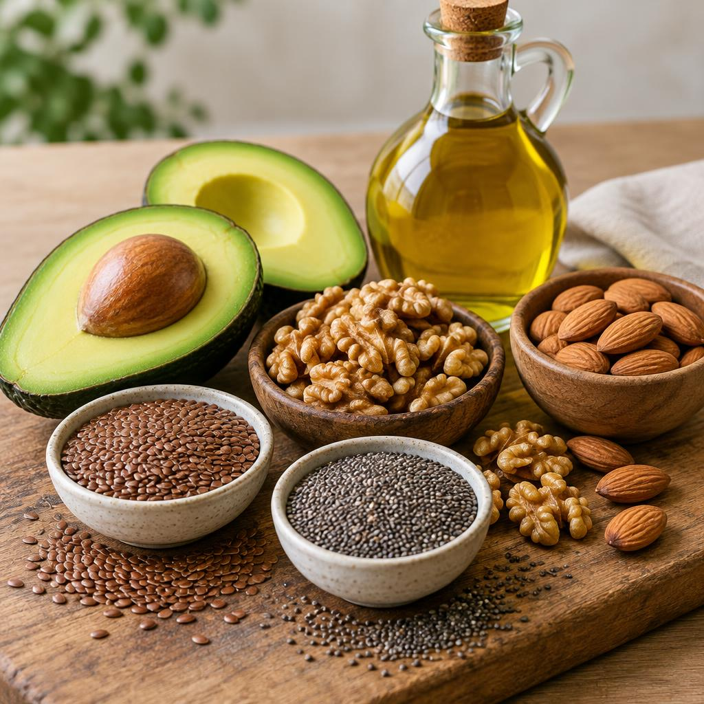
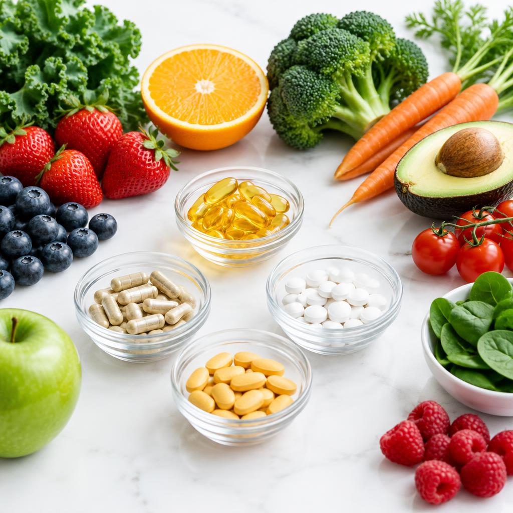

Um guia em formato de revista — da dieta cetogênica a Levítico 11, do ômega 3 ao escorbuto.
Para conquistar o nível avançado, o desbravador precisa já ter a especialidade de Nutrição. Ela ensina os grupos alimentares, os nutrientes, a pirâmide/prato saudável e a leitura de rótulos — fundamentos usados em toda esta página.
Ver especialidade de Nutrição →O Guia Alimentar para a População Brasileira (Ministério da Saúde, 2014) é elogiado no mundo todo por uma regra simples: faça de alimentos in natura ou minimamente processados a base da sua alimentação e evite os ultraprocessados.
Dieta (do grego díaita, “modo de vida”) é o conjunto de alimentos e bebidas que uma pessoa consome habitualmente. Em sentido clínico, é um plano alimentar planejado para um objetivo: manter a saúde, tratar ou prevenir doenças, ganhar ou perder peso. Conheça as principais dietas terapêuticas:
Pouco sódio (sal): em geral até 2 g de sódio/dia (≈5 g de sal). Evita embutidos, enlatados, temperos prontos e salgadinhos; usa ervas no lugar do sal.
Indicada: hipertensão, insuficiência cardíaca, doenças renais, retenção de líquidos e cirrose.Fornece menos calorias do que o corpo gasta (déficit de ~500 kcal/dia), mantendo todos os nutrientes. Prioriza vegetais, fibras e proteínas magras.
Indicada: sobrepeso e obesidade, sempre com acompanhamento profissional.Controla quantidade e qualidade dos carboidratos, com refeições fracionadas, alimentos integrais, de baixo índice glicêmico e sem açúcar simples.
Indicada: diabetes tipo 1, tipo 2, gestacional e pré‑diabetes.Muito pobre em carboidratos (geralmente <50 g/dia) e rica em gorduras, fazendo o corpo produzir corpos cetônicos como combustível (cetose).
Indicada: principalmente epilepsia refratária a medicamentos, sob supervisão médica.Limita gorduras totais (cerca de 20–25% das calorias), sobretudo saturadas e trans: evita frituras, carnes gordas, creme de leite e embutidos.
Indicada: colesterol alto, doenças da vesícula, pancreatite, má absorção de gordura e doenças cardiovasculares.25–38 g de fibra por dia, com integrais, leguminosas, frutas com casca, verduras e sementes — sempre com muita água.
Indicada: prisão de ventre, diverticulose, controle da glicemia e do colesterol, saciedade.Exclui trigo, centeio, cevada, malte e derivados (e aveia contaminada). Usa arroz, milho, mandioca, batata, quinoa e trigo‑sarraceno.
Indicada: doença celíaca, sensibilidade ao glúten não celíaca e alergia ao trigo.
A vitamina B12 (cobalamina) é a única que não é obtida de forma confiável numa dieta vegetariana estrita (vegana). Ela é produzida por bactérias e se acumula em alimentos de origem animal; os vegetais não a contêm em forma ativa.
As gorduras fornecem energia, transportam as vitaminas A, D, E e K e formam as membranas das células. A diferença está na estrutura química — e no efeito sobre o coração.

Não possuem ligações duplas entre carbonos; ficam sólidas em temperatura ambiente. Em excesso elevam o LDL. Fontes: carnes gordas, manteiga, queijos, banha, óleo de coco e de palma.
Têm uma (mono) ou mais (poli) ligações duplas; são líquidas em temperatura ambiente. Reduzem o LDL e protegem o coração. Fontes: azeite, abacate, castanhas, nozes, sementes, óleos vegetais.
Formadas pela hidrogenação industrial de óleos vegetais. Aumentam o LDL e diminuem o HDL, inflamam os vasos. Fontes: margarinas duras, biscoitos recheados, sorvetes, salgadinhos e frituras industriais.
A gordura mais saudável é a insaturada: ela ajuda a baixar o colesterol ruim, mantém o bom e reduz o risco de infarto e AVC.
Lipoproteína de alta densidade que retira o excesso de colesterol das artérias e o leva ao fígado para ser eliminado. Quanto mais alto, melhor.
Aumentam o HDL: azeite, abacate, castanhas, nozes, linhaça, chia, peixes gordos, aveia — e exercício físico.Lipoproteína de baixa densidade que transporta colesterol do fígado para os tecidos; em excesso, deposita‑se nas artérias formando placas (aterosclerose).
Elevam o LDL: carnes gordas, embutidos, manteiga, queijos amarelos, gema em excesso, frituras e gordura trans.Observação: o colesterol só existe em alimentos de origem animal. Os vegetais não têm colesterol, mas influenciam muito seus níveis no sangue.
Ácido graxo poli‑insaturado essencial (o corpo não fabrica): ALA, EPA e DHA. Benefícios: anti‑inflamatório, reduz triglicerídeos, protege o coração, essencial para cérebro, retina e desenvolvimento do bebê; pode ajudar no humor e na memória.
Fontes: linhaça, chia, nozes, óleo de canola, soja, algas e peixes de água fria.Também poli‑insaturado e essencial (ácido linoleico). Benefícios: reduz o LDL, participa do crescimento, da saúde da pele e cabelo, da função reprodutiva e da resposta imune.
Fontes: óleos de girassol, milho e soja, sementes e castanhas.Quadro de referência para a região Sudeste/Sul do Brasil (base: calendário da CEAGESP). Adapte com os produtos de sua região — pergunte ao feirante!
| Alimento | Jan | Fev | Mar | Abr | Mai | Jun | Jul | Ago | Set | Out | Nov | Dez |
|---|---|---|---|---|---|---|---|---|---|---|---|---|
| 🥭 Manga | ● | ● | ● | ● | ● | |||||||
| 🍊 Laranja | ● | ● | ● | ● | ● | |||||||
| 🍊 Tangerina/Mexerica | ● | ● | ● | ● | ● | |||||||
| 🍓 Morango | ● | ● | ● | ● | ● | |||||||
| 🍍 Abacaxi | ● | ● | ● | ● | ||||||||
| 🍇 Uva | ● | ● | ● | ● | ||||||||
| 🥑 Abacate | ● | ● | ● | ● | ||||||||
| 🍌 Banana | ● | ● | ● | ● | ● | ● | ● | ● | ● | ● | ● | ● |
| 🎃 Abóbora | ● | ● | ● | ● | ● | ● | ||||||
| 🍅 Tomate | ● | ● | ● | ● | ||||||||
| 🥕 Cenoura | ● | ● | ● | ● | ● | |||||||
| 🥦 Brócolis | ● | ● | ● | ● | ||||||||
| 🥬 Couve | ● | ● | ● | ● | ● | |||||||
| 🥗 Alface | ● | ● | ● | ● | ● | |||||||
| 🌽 Milho verde | ● | ● | ● | ● | ||||||||
| 🥒 Pepino | ● | ● | ● | ● | ● | ● |
● = meses de safra (maior oferta e melhor qualidade).
Com oferta alta, o preço cai.
Colhido no ponto certo, com mais vitaminas e sabor.
Fora de época a planta precisa de mais química e estufa.
Vem de perto, gasta menos transporte e apoia o produtor local.
Alimentação por meio do trato digestivo, usando fórmulas especiais administradas por sonda (nasogástrica, nasoentérica, gastrostomia ou jejunostomia) ou por via oral como complemento. O intestino continua funcionando.
Indicada: dificuldade de engolir (AVC, doenças neurológicas, câncer de cabeça e pescoço), coma, pacientes intubados, queimaduras graves, desnutrição, anorexia.Nutrientes (glicose, aminoácidos, lipídios, vitaminas e minerais) aplicados diretamente na veia, sem passar pelo sistema digestivo — em veia periférica ou central.
Indicada: quando o intestino não pode ser usado — obstrução intestinal, síndrome do intestino curto, fístulas, pancreatite grave, pós‑operatórios complexos, prematuros extremos.Regra de ouro: “se o intestino funciona, use‑o”. A enteral é preferida por ser mais fisiológica, barata e segura.
Durante 7 dias, anote tudo o que comer e beber: horário, alimento, quantidade (em medidas caseiras), local e como se sentia. Depois, use uma tabela nutricional (como a TACO, da Unicamp) ou um aplicativo para calcular os nutrientes e comparar com as recomendações abaixo.
Valores de referência (DRIs – Institute of Medicine/EUA, usadas no Brasil) para pessoas moderadamente ativas.
| Nutriente | Meninos 9–13 | Meninas 9–13 | Rapazes 14–18 | Moças 14–18 |
|---|---|---|---|---|
| Calorias | ≈ 2.000–2.200 kcal | ≈ 1.800–2.000 kcal | ≈ 2.400–2.800 kcal | ≈ 2.000 kcal |
| Carboidratos | mín. 130 g · 45–65% das calorias | |||
| Proteínas | 34 g | 34 g | 52 g | 46 g |
| Gorduras | 25–35% das calorias | 25–35% das calorias (saturada <10%) | ||
| Sódio | 1.500 mg (máx. 2.300 mg ≈ 5,8 g de sal) | |||
| Fibra alimentar | 31 g | 26 g | 38 g | 26 g |
| Ferro | 8 mg | 8 mg | 11 mg | 15 mg |
| Cálcio | 1.300 mg | |||
Em Levítico 11, Deus orienta Israel sobre quais animais poderiam ser comidos:
Por quê? 1) Saúde: os animais imundos geralmente são carniceiros, filtradores ou detritívoros, acumulam toxinas, parasitas (como a Taenia solium e a triquinose do porco) e bactérias. 2) Santidade: “Eu sou o Senhor vosso Deus… sereis santos, porque eu sou santo” (Lv 11:44–45) — era um sinal de obediência e separação. A distinção já existia antes de Moisés (Gn 7:2) e reflete o cuidado de Deus com o corpo, templo do Espírito Santo (1 Co 6:19–20). O ideal original, porém, era a dieta vegetal do Éden (Gn 1:29).
Nenhum alimento isolado “mata”, mas o hábito diário sim. Veja os prejuízos de cada costume:
Hipertensão, AVC, infarto, doença renal, retenção de líquidos, câncer de estômago e perda de cálcio dos ossos.
Cáries, obesidade, resistência à insulina e diabetes tipo 2, gordura no fígado, aumento de triglicerídeos e queda da imunidade.
Obesidade, colesterol alto, aterosclerose, doenças cardíacas, pedras na vesícula, má digestão e alguns cânceres.
Pimentas, mostarda, vinagre e temperos fortes irritam a mucosa: gastrite, úlcera, azia/refluxo e hemorroidas. Temperos industrializados ainda trazem muito sódio.
Ricos em sal, açúcar, gorduras e aditivos (corantes, conservantes); pobres em fibras e vitaminas. Ligados a obesidade, hipertensão, diabetes, câncer e depressão.
Cafeína e teína (café, chá preto/mate/verde, guaraná): insônia, ansiedade, taquicardia, irritabilidade, dependência, gastrite e redução da absorção de ferro e cálcio.
Muito açúcar (uma lata ≈ 7 colheres de chá), ácido fosfórico, corantes e sódio: cáries, erosão dentária, obesidade, diabetes e ossos fracos.
O estômago não descansa: digestão lenta, fermentação, gastrite, ganho de peso e picos de insulina constantes. Ideal: intervalos de 4–5 horas.
Sobrecarga do estômago, má digestão, sonolência, refluxo, obesidade e todas as doenças associadas a ela.
Low carb extrema e similares sem orientação: falta de vitaminas, fibras e energia, fadiga, mau humor, prisão de ventre, efeito sanfona e risco de transtornos alimentares.
Clique em cada doença para ver como ocorre, sinais, prevenção e o que muda no prato.
Glicose alta no sangue. Tipo 1: o pâncreas não produz insulina (autoimune). Tipo 2: o corpo resiste à insulina, ligado a obesidade e sedentarismo.
Muita sede e urina, fome excessiva, perda de peso, cansaço, visão turva, feridas que demoram a cicatrizar.
(Tipo 2) Peso adequado, exercícios, menos açúcar e ultraprocessados, mais fibras.
Refeições fracionadas, carboidratos integrais e de baixo índice glicêmico, sem açúcar, muitas verduras, leguminosas e contagem de carboidratos.
Pressão do sangue nas artérias constantemente ≥ 14 por 9 (140/90 mmHg). Fatores: genética, sal, obesidade, estresse, sedentarismo, álcool.
Geralmente silenciosa! Às vezes dor de cabeça na nuca, tontura, zumbido, sangramento nasal.
Pouco sal, atividade física, peso saudável, não fumar, controlar o estresse, medir a pressão regularmente.
Hipossódica e padrão DASH: frutas, verduras, integrais, laticínios magros, oleaginosas; ricos em potássio e magnésio; evitar embutidos e enlatados.
Perda de massa e qualidade óssea; ossos porosos e frágeis. Mais comum em mulheres após a menopausa e idosos.
Silenciosa até haver fraturas (quadril, punho, coluna), perda de altura, corcunda.
Formar bons ossos na adolescência! Cálcio, vitamina D, sol, exercícios de impacto, evitar refrigerantes, cafeína e sal em excesso.
Rica em cálcio (leite, iogurte, tofu, gergelim, couve, brócolis), vitamina D, vitamina K e proteínas adequadas.
Doença autoimune: o glúten provoca inflamação que destrói as vilosidades do intestino delgado, prejudicando a absorção.
Diarreia, inchaço abdominal, gases, perda de peso, anemia, baixa estatura, aftas, cansaço. Às vezes sem sintomas.
Não há prevenção (é genética); o diagnóstico precoce evita complicações.
Isenta de glúten por toda a vida; ler rótulos (“contém glúten”) e evitar contaminação cruzada na cozinha.
Falta ou redução da enzima lactase, que digere o açúcar do leite. A lactose fermenta no intestino.
Gases, cólicas, inchaço e diarreia de 30 min a 2 h após consumir lácteos.
Não há prevenção; é muito comum na vida adulta.
Reduzir ou retirar lactose conforme a tolerância; produtos zero lactose, enzima lactase; garantir cálcio por outras fontes.
Reação do sistema imunológico às proteínas do leite (caseína, beta‑lactoglobulina). Mais comum em bebês.
Urticária, vômitos, diarreia com sangue, cólicas, chiado, e até anafilaxia.
Aleitamento materno exclusivo até 6 meses ajuda a proteger.
Exclusão total do leite e derivados (zero lactose não serve!), fórmulas especiais para bebês e leitura rigorosa de rótulos.
Acúmulo de placas de gordura (LDL), cálcio e células inflamatórias na parede das artérias, que endurecem e se estreitam.
Silenciosa por anos; depois dor no peito (angina), infarto, AVC, dor nas pernas ao caminhar.
Não fumar, exercícios, controle de pressão, glicose e colesterol, peso saudável.
Pobre em gordura saturada e trans, rica em fibras, ômega 3, frutas, verduras, integrais e oleaginosas (padrão mediterrâneo).
Segundo a Anvisa, suplementos alimentares são produtos de uso oral (cápsulas, pós, líquidos) que fornecem nutrientes ou substâncias bioativas para complementar a alimentação de pessoas saudáveis. Não são remédios e só devem ser usados quando a dieta não supre a necessidade — com indicação de nutricionista ou médico.

| Suplemento | Quando é necessário | Riscos sem orientação |
|---|---|---|
| Vitamina B12 | Veganos, idosos, quem usa metformina ou antiácidos por muito tempo | Raro, mas mascara diagnósticos de outras doenças |
| Vitamina D | Pouca exposição ao sol, idosos, osteoporose, deficiência comprovada | Excesso de cálcio no sangue, pedras nos rins, arritmia |
| Ferro | Anemia ferropriva, gestantes, bebês, menstruação intensa | Prisão de ventre, náusea, acúmulo tóxico no fígado e coração |
| Ácido fólico | Antes e no início da gestação (prevenir defeitos no tubo neural) | Pode esconder a falta de B12 |
| Cálcio | Baixa ingestão de lácteos, osteoporose | Cálculos renais, prisão de ventre, calcificação de vasos |
| Ômega 3 | Triglicerídeos altos, baixa ingestão de fontes | Risco de sangramento, interação com anticoagulantes |
| Whey/proteínas | Atletas, idosos com perda muscular, quando a dieta não alcança a meta | Sobrecarga renal e hepática, gasto desnecessário, ganho de peso |
| Creatina | Esportes de força/potência, idosos com sarcopenia | Retenção de líquidos, desconforto gástrico; cuidado em doença renal |
| Multivitamínicos | Dietas muito restritas, pós‑cirurgia bariátrica, idosos | Excesso de vitaminas A, D, E, K (lipossolúveis) se acumula e intoxica |
Em 1747, o médico James Lind provou com limões que a vitamina C curava o escorbuto dos marinheiros — um dos primeiros experimentos clínicos da história.
Daniel e seus amigos pediram legumes e água por 10 dias e ficaram mais saudáveis que todos os jovens que comiam as iguarias do rei.
Loma Linda (Califórnia), comunidade adventista, é uma das 5 “zonas azuis” do mundo: seus moradores vivem até 10 anos a mais.
A dupla brasileira forma uma proteína completa: o arroz fornece metionina e o feijão, lisina.